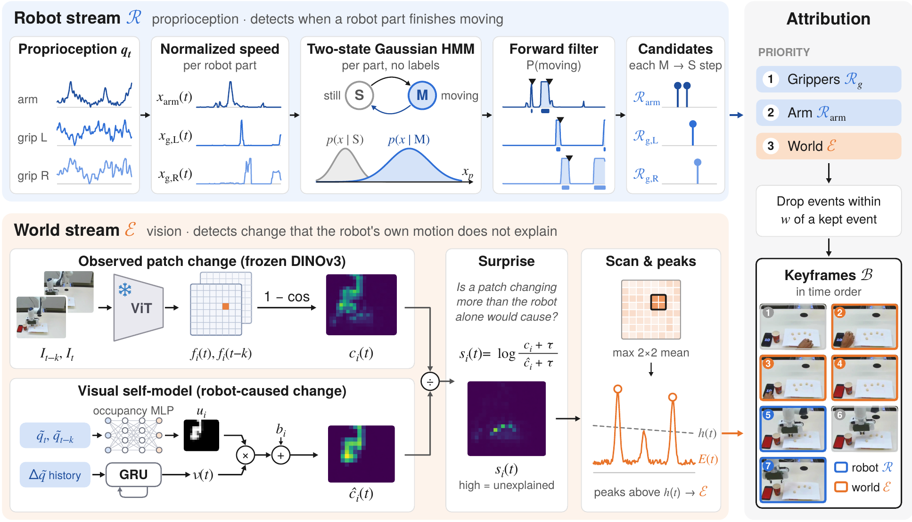
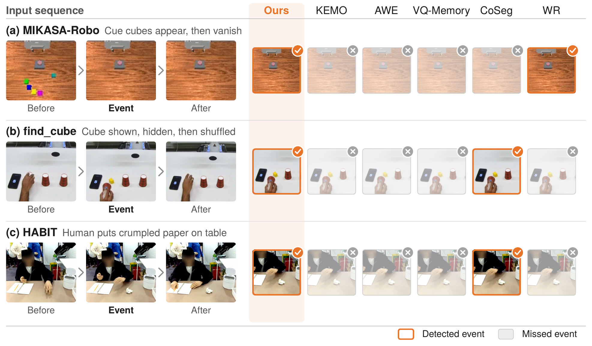
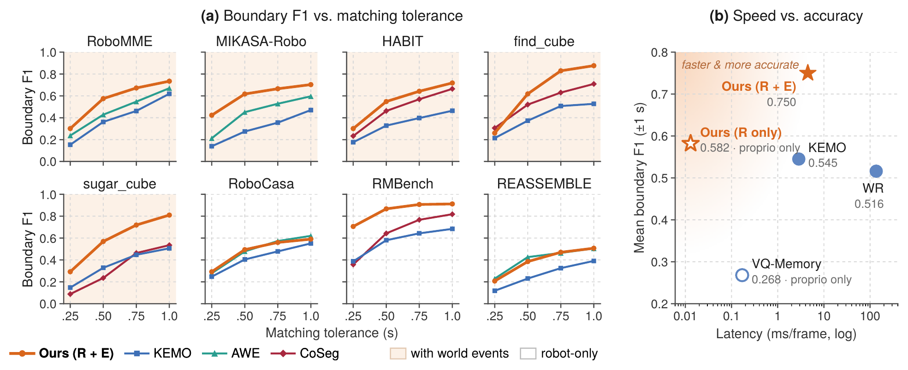

Identifying meaningful temporal boundaries in robot demonstrations is essential for automatically curating trajectories into informative keyframes. Existing unsupervised approaches predominantly rely on robot motion or visual changes in isolation, making it difficult to detect keyframes arising from both robot actions and changes in the surrounding environment.
We present an online, unsupervised framework for keyframe detection that accounts for both sources of event evidence. Our method combines a proprioceptive stream that detects the completion of robot arm and gripper motions with a visual stream that identifies scene changes unexplained by the robot's expected visual effects. Specifically, a robot-conditioned recurrent self-model predicts visual feature changes associated with robot motion, allowing unexpected changes to serve as additional keyframe evidence. The resulting event proposals are merged into a unified set of keyframe timestamps. Both event models are learned without keyframe annotations, while shared detection parameters are selected on a subset of validation benchmarks and applied unchanged across all eight evaluation settings.
Across eight simulated and real-robot evaluation settings, our method achieves a mean boundary-detection F1 of 0.750, outperforming the strongest external baseline (0.639) under a uniform ±1-second evaluation tolerance. Across five settings containing both robot- and world-associated events, fusion improves mean F1 from 0.512 with proprioception alone to 0.798, compared with 0.663 for the strongest external baseline. Further ablations show that robot-conditioned visual prediction improves world-event detection over raw visual feature changes on all five evaluated settings.
0.750
mean F1 over eight settings
(strongest baseline 0.639)
0.512 → 0.798
mean F1 on robot-and-world settings,
proprioception alone → fused
4.49 ms
per frame for the full online
detector (223 frames/s)
Visual change alone conflates the robot's own motion with independent changes in the scene, while proprioception sees only the robot. We therefore separate two sources of keyframe evidence and fit both without keyframe annotations.

Detection is causal: no robot masks, camera calibration or access to the full trajectory are needed.
Keyframe-detection F1 at ±1 s on eight settings: five whose reference keyframes include both robot and world events (including two physical Franka tasks), and three with robot events only. Our online detector has the best mean F1 and leads on every benchmark with world events. On the robot-only settings the robot stream alone is strongest, and AWE is better than the fused detector on RoboCasa.
| Robot + world events | Robot events only | ||||||||
|---|---|---|---|---|---|---|---|---|---|
| Method | RoboMME | MIKASA | HABIT | find_cube | sugar_cube | RoboCasa | RMBench | REASSEMBLE | Mean(8) |
| AWE (offline) | .792 | .596 | .558 | .231 | .443 | .620 | .758 | .505 | .563 |
| VQ-Memory | .583 | .331 | .389 | .041 | .070 | .179 | .569 | .151 | .289 |
| CoSeg (offline) | .820 | .587 | .664 | .709 | .535 | .555 | .818 | .427 | .639 |
| Worth Remembering | .682 | .454 | .385 | .615 | .519 | .476 | .614 | .380 | .516 |
| KEMO | .769 | .470 | .464 | .527 | .506 | .551 | .684 | .391 | .545 |
| Ours (ℛ only) | .748 | .511 | .622 | .195 | .484 | .650 | .915 | .586 | .589 |
| Ours (ℰ only) | .676 | .621 | .582 | .803 | .653 | .453 | .634 | .357 | .597 |
| Ours (ℛ ⊕ ℰ) | .885 | .703 | .718 | .876 | .810 | .590 | .912 | .507 | .750 |
Bold: best fused or external method per column. AWE and CoSeg require the complete demonstration (offline).
Cue cubes appear and vanish in MIKASA-Robo, a cube is shown, hidden and shuffled among cups in the Franka find_cube task, and a person places crumpled paper on the table in HABIT. None of these coincides with a completed robot motion. Our detector recovers all three, while the proprioceptive and kinematics-driven baselines miss them.

Combining both streams improves F1 on all five settings with robot and world events. On MIKASA-Robo, recall of world events rises from 17.0% with the robot stream alone to 69.7% after fusion; on the two physical Franka tasks, the robot stream finds none of the annotated world events, while the fused detector recovers 79–94% of them. Discounting the change expected from the robot's own motion also improves world-event detection over raw DINOv3 feature change on all five settings.
Rescoring the same detections at tolerances from ±0.25 s to ±1 s, our detector leads the external baselines on the robot-and-world settings at nearly every tolerance. The complete detector, including DINOv3 and the recurrent self-model, processes a frame in 4.49 ms, compared with 2.86 ms for KEMO and 135.9 ms for Worth Remembering.

@article{anonymous2026whatjusthappened,
author = {Anonymous},
title = {What Just Happened? Online Unsupervised Keyframe Detection from Robot Motion and Visual Surprise},
journal = {Under review at Transactions on Machine Learning Research},
year = {2026},
}